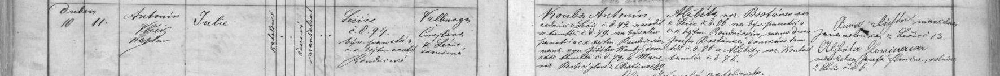

Text z matriky a překlad
Přepis originálu
Ledčice čp. 94, narozena 10. 4. 1878, pokřtěna 11. 4. 1878 kaplanem Antonínem Vlčkem (?), katolička, manželská. Otec Antonín Kouba, zedník v Ledčicích čp. 94, narozený tamtéž v čp. 79, manželský syn Jiřího Kouby, domkáře tamtéž čp. 79, a Marie rozené Rechcíglové (?) z Chržína (?) čp. 42. Matka Alžběta rozená Brotánková z Ledčic čp. 86, manželská dcera Josefa Brotánka, domkáře tamtéž čp. 86, a Alžběty rozené Koubové tamtéž čp. 76. Kmotry Anna Šiftová (?), manželka Jana, rolníka v Ledčicích čp. 13, a Alžběta Floriánová, manželka Josefa Floriána, rolníka v Ledčicích čp. 6. Porodní bába Valburga Čmejlová.
Překlad
Ledčice čp. 94, narozena 10. 4. 1878, pokřtěna 11. 4. 1878 kaplanem Antonínem Vlčkem (?), katolička, manželská. Otec Antonín Kouba, zedník v Ledčicích čp. 94, narozený tamtéž v čp. 79, manželský syn Jiřího Kouby, domkáře tamtéž čp. 79, a Marie rozené Rechcíglové (?) z Chržína (?) čp. 42. Matka Alžběta rozená Brotánková z Ledčic čp. 86, manželská dcera Josefa Brotánka, domkáře tamtéž čp. 86, a Alžběty rozené Koubové tamtéž čp. 76. Kmotry Anna Šiftová (?), manželka Jana, rolníka v Ledčicích čp. 13, a Alžběta Floriánová, manželka Josefa Floriána, rolníka v Ledčicích čp. 6. Porodní bába Valburga Čmejlová.